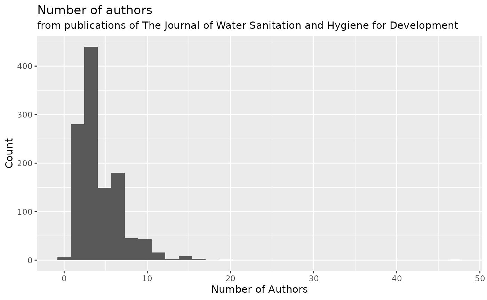
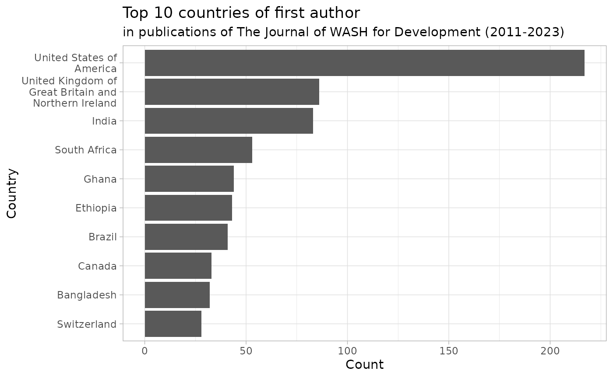
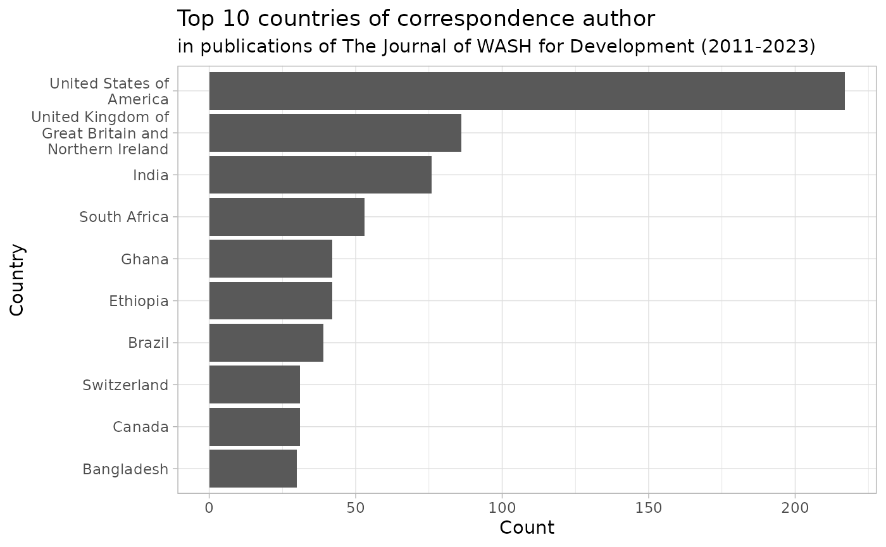

Case Study I: Authors in WASH for Development
Mian Zhong
Source:vignettes/articles/examples.Rmd
examples.RmdIn this post, we will explore the author information in the dataset
washdev. According to the journal website, WASH Development
gives support for authors from LMIC to increase their access to
publication in the journal:
The Journal of Water Sanitation and Hygiene for Development is concerned to attract high quality papers from a wide range of countries, sectors and disciplines. Its Editors recognise that there are barriers that often discourage individuals and teams, especially in low income countries, from publishing in international journals.
Furthermore, to concern with the research conducted in the LMIC countries, the journal also gives the following instructions:
The Journal of Water Sanitation and Hygiene for Development welcomes publications with lead and co-authors from countries at all stages of development. We often receive submissions reporting on work undertaken in a country other than that of residence or citizenship of the authors. We normally expect that such work will have involved active and substantive participation of individuals from the country concerned as partners and that they will therefore be engaged as co-authors. Papers submitted where this is not the case may be rejected. Exceptions include papers based on re-analysis of previously published data.
Now, let us explore the dataset about the first and correspondence authors in the journal.
First, we can have a look at the distribution of the number of authors.
ggplot(data = washdev, aes(x = num_authors)) +
geom_histogram() +
labs(title = "Number of authors",
subtitle = "from publications of The Journal of Water Sanitation and Hygiene for Development",
x = "Number of Authors", y = "Count")
Are first author and correspondence author from the same country? Yes, only 55 are from different countries.
What are the top 10 countries(or regions) the first authors from?
washdev |>
group_by(first_author_affiliation_country) |>
filter(!is.na(first_author_affiliation_country)) |>
summarise(count=n()) |>
arrange(desc(count)) |>
head(10) |>
ggplot() +
geom_col(aes(x = fct_reorder(first_author_affiliation_country, count),
y = count)) +
coord_flip() +
scale_x_discrete(labels = scales::label_wrap(20))+
labs(x = "Country", y = "Count",
title = "Top 10 countries of first author",
subtitle = "in publications of The Journal of WASH for Development (2011-2023)") +
theme_light()
And correspondence authors?
washdev |>
group_by(correspondence_author_affiliation_country) |>
filter(!is.na(correspondence_author_affiliation_country)) |>
summarise(count=n()) |>
arrange(desc(count)) |>
head(10) |>
ggplot() +
geom_col(aes(x = fct_reorder(correspondence_author_affiliation_country, count),
y = count)) +
coord_flip() +
scale_x_discrete(labels = scales::label_wrap(20))+
labs(x = "Country", y = "Count",
title = "Top 10 countries of correspondence author",
subtitle = "in publications of The Journal of WASH for Development (2011-2023)") +
theme_light()